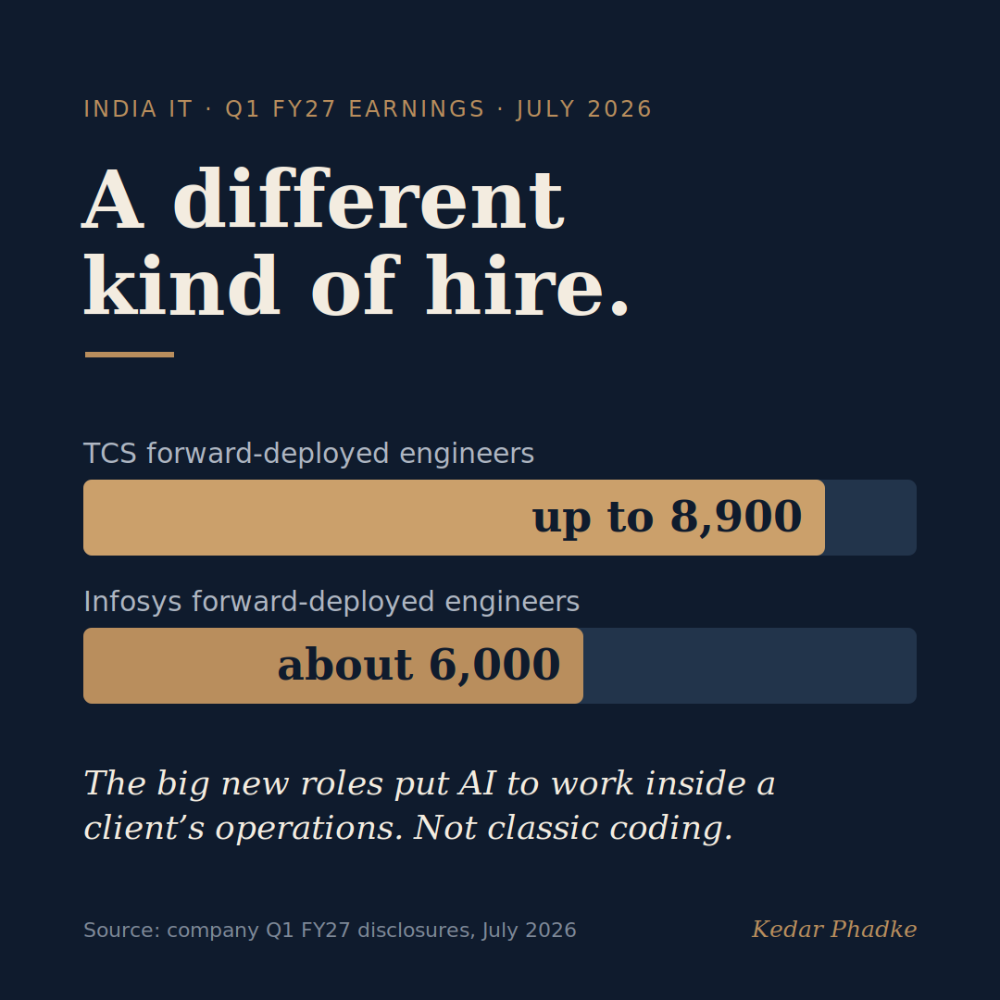

Same Hiring Numbers. A Different Job.
The fresher-hiring numbers from India's big IT firms look reassuringly familiar this year. Infosys is again planning about 20,000 graduate hires, the same as last year. HCLTech says its fresher intake will stay broadly similar. TCS trimmed its target to 25,000, down from its old run-rate, but its overall headcount still grew last quarter. If you read only the totals, the mass-hiring machine looks intact.
Look closer, though, and two things have shifted underneath those totals. Both say more about your career than the headline number does.
First: how they decide whom to hire
For two decades, Indian engineering colleges and IT firms ran on a shared rhythm. Colleges produced large batches, companies absorbed them in annual cycles, and placement season was the ritual that connected the two. This year, HCLTech and Wipro stopped giving an annual fresher target at all. HCLTech now runs what it calls a rolling quarterly plan, tied to demand rather than to a number set twelve months in advance. The volume may be similar, but the fixed annual commitment is gone. Hiring is becoming something that happens continuously, in response to real work, rather than once a year on a promise.
Hiring didn't shrink so much as change shape.
Second: what the new roles actually are
This is the part that should reshape how you prepare. In their Q1 results this month, TCS said it is building a team of up to 8,900 forward-deployed engineers: people who embed with clients to deploy, customise, and manage AI systems in real operating environments. Infosys is building roughly 6,000 similar roles. Happiest Minds is going further, retraining its existing engineers into the same kind of job rather than hiring fresh for it.

This is a specific skill set, and it is neither pure software development nor traditional project management. It sits in between. Someone who can take an AI system and make it work in a messy client environment, with imperfect data and a business outcome that somebody is measuring. Naukri's JobSpeak index points the same way: AI-related hiring in IT rose 16% in June even as overall tech hiring fell. That index comes from a job platform with its own interest in a busy market, so read it as a direction, not a precise figure. But the direction is clear.
What this means if you're early in your career
So the number of doors has not shrunk the way the feeds suggest. What has changed is what sits behind them. The firms are telling you plainly what they want, just not loudly. The question is no longer whether to learn AI. It is whether you are learning it in a way that is deployment-ready. Can you apply it to a real client problem? Can you handle the moment it breaks? Can you explain the decision it made to someone who was not in the room?
If you are a few years in, the path is clearer than it used to be, even if it is narrower. The people getting picked are the ones who can hold both sides, the technical and the operational. Some universities are starting to respond, but there is still a real gap between what any curriculum can teach and what a forward-deployed engineer faces on day one with a client.
I have watched too many capable graduates assume the old escalator would carry them up automatically. It still runs. It just stops at a different floor now, and the companies have described that floor quite precisely. The question is whether our students and our programmes are listening.
Are you preparing yourself to build AI, or to deploy it? Because hiring managers right now are increasingly looking for the second.
#India #ITIndustry #FutureOfWork #EngineeringEducation #CareersEvery factual claim here traces to independent reporting on the companies' Q1 FY27 earnings, which are regulated public disclosures rather than any vendor or marketing source.
The hiring numbers (roughly steady)
- Infosys plans about 20,000 freshers for FY27, the same as last year: BW People.
- HCLTech dropped its annual target for a demand-linked rolling quarterly plan, with volume broadly similar to the previous year: DQIndia. Wipro gave no FY27 hiring guidance: People Matters.
The new roles
- TCS is building a team of up to 8,900 forward-deployed engineers, framed as 1 to 1.5% of its workforce (it did not specify how many would be new hires versus retrained staff): Business Standard, reporting on TCS's Q1 FY27 results and Reuters interviews.
- Infosys is building roughly 6,000 similar client-facing engineering roles: Whalesbook.
Directional signal
- AI-related hiring in India's IT sector rose 16% in June even as overall tech hiring fell (Naukri JobSpeak index, via Moneycontrol). Naukri is a job platform with a commercial interest in a busy market, so this is a directional signal, not independent data.
A version of this essay was first shared on LinkedIn.